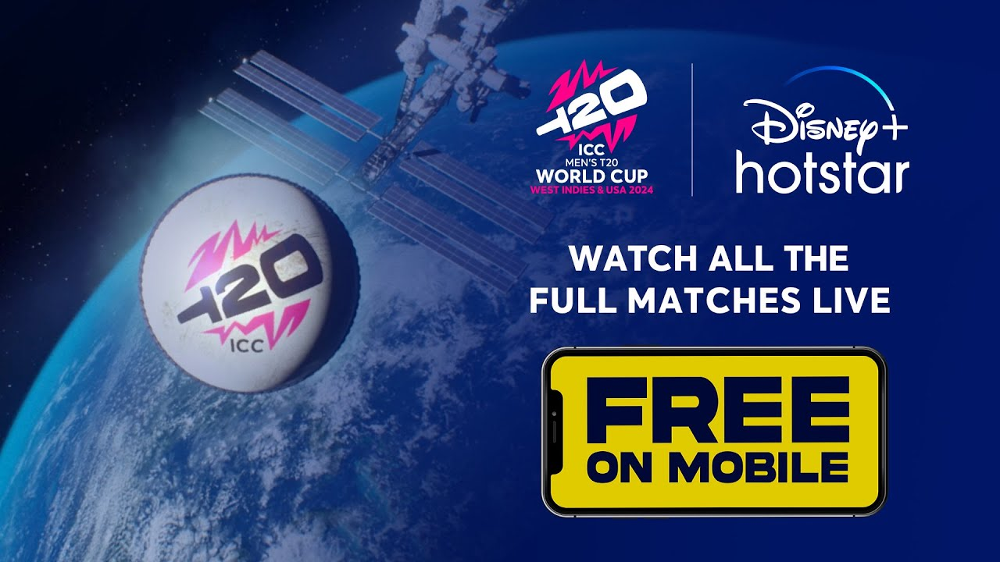

🏏 ICC Men's T20 World Cup 🏆
INDIA VS PAKISTAN
Sunday, 9 June
8:00 pm
Group stage - T20 19 of 55


Watch Live
Book your tickets now:click here
The most-awaited clash of #T20WorldCup - India vs Pakistan is #TrendingNow and the seats are filling fast, so head over to BookMyShow and secure your place! 🏆
SCORECARD
India squad
Rohit Sharma(C)
Right-Handed Batsman
Shubman Gill
Right-Handed Batsman
Suryakumar Yadav
Right-Handed Batsman
Virat Kohli
Right-Handed Batsman
Yashasvi Jaiswal
Left-Handed Batsman
Axar PAtel
Left-Handed Batsman - Left-Arm Spin Bowler
Hardik Pandiya
Right-Handed Batsman - Right-Arm Medium Fast Bowler
Ravindra Jadeja
Left-Handed Batsman - Left-Arm Off Spin Bowler
Shivam Dube
Left-Handed Batsman - Right-Arm Medium Bowler
Rishabh PAnt(Wk)
Left-Handed Batsman
Sanju Samson(Wk)
Right-Handed Batsman
Arshdeep Singh
Left-Arm Medium Fast Bowler
Avesh Khan
Right-Arm Medium Fast Bowler
Jasprit Bumrah
Right-Arm Fast Bowler
Khaleel Ahmed
Left-Arm Medium Bowler
Kuldeep Yadav
Left-Arm Leg Spin Bowler
Mohammed Siraj
Right-Arm Fast Medium Bowler
Yuzvendra Chahal
Right-Arm Leg Spin Bowler
Rinku Singh
Left-Hande Batsman
Pakistan Squad
Babar Azam(C)
Right-Handed Batsman
Fakhar Zaman
Left-Handed Batsman
Saim Ayub
Left-Handed Batsman
Ushman Khan
Right-Handed BAtsman
Iftikhar Ahmed
Right-Handed Batsman - Right-Arm Off Spin Bowler
Imad Wasim
Left-Handed Batsman - Left-Arm Off Spin Bowler
Shadab Khan
Left-Handed Batsman - Right-Arm Leg Spin Bowler
Azam Khan(Wk)
Right-Handed Batsman
Mohammad Rizwan(Wk)
Right-Handed Batsman
Abbas Afridi
Right-Arm Medium Fast Bowler
Abrar Ahmed
Right-Arm Leg Spin Bowler
Haris Rauf
Right-Arm Fast Bowler
Mohammad Amir
Left-Arm Fast Bowler
Naseem Shah
Right-Arm Fast Bowler
Shaheen Afrifi
Left-Arm Fast Bowler
Stadium: Nassau County International Cricket Stadium
Timezone: All times are in Indian Standard Time